Lectures in this section
Each lecture links to the notes that cover it. Reuse the bucket and prefix layout from Section 1: raw/, staging/, curated/.
- Amazon S3 — buckets, objects, keys and naming rules ~12:00 Slides 9–14
- S3 storage classes — overview and durability ~6:00 Slide 15
- Batch versus streaming ingestion ~8:00 Slides 16–17
- AWS Glue — managed ETL at a glance ~10:00 Slides 18–21
- The Glue Data Catalog and crawlers ~9:00 Slide 22
Amazon S3 — the foundation of every data lake
Amazon Simple Storage Service (S3) is the default answer when an exam question says "store data in AWS". It is cost-effective object storage with a simple web interface and API, and it underpins data lakes, backups, static websites, and the raw layer of nearly every pipeline in this course.
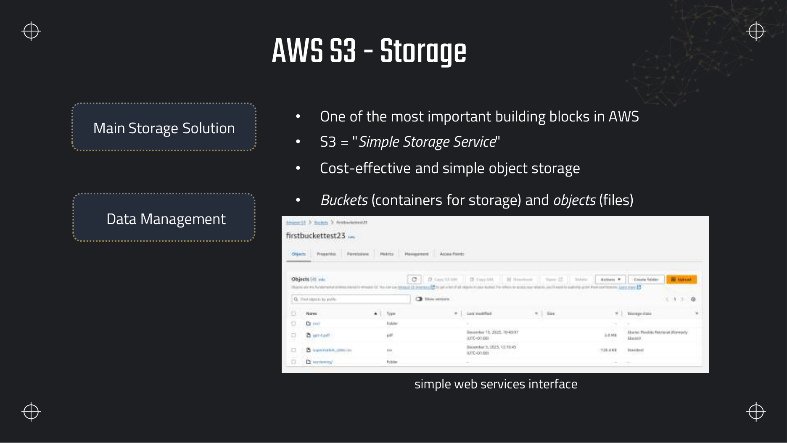
pics/, and individual objects can sit in different storage classes — here a CSV in Standard and a PDF in Glacier Flexible Retrieval.Buckets, objects and keys — the vocabulary
S3 organises data in two levels only:
- Bucket — a globally unique container created in one AWS Region. Think of it as the top-level namespace, not a folder on a disk.
- Object — the actual bytes you store: a CSV, a Parquet file, a JSON log line batch, an image. Each object has data, metadata (key/value pairs you set), and a system-generated version ID if versioning is on.
- Key — the full name of the object within the bucket, including any "path". The key
documents/example.txtis one string; S3 does not have real directories. - Prefix — the part of a key before the final slash, used for listing and partitioning.
raw/customers/is a prefix, not a folder object — though the console displays it like one.
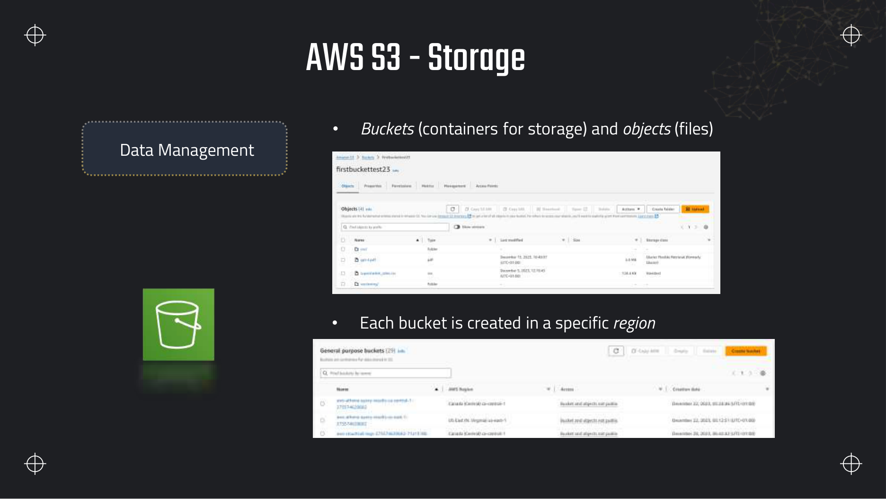
ca-central-1 and us-east-1 — a crawler or Athena query in the wrong region is the most common cause of "table has zero rows".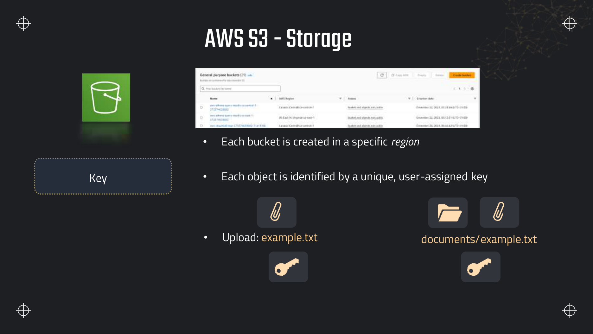
example.txt and documents/example.txt are two different objects in the same bucket — the slash is part of the key string, not a filesystem path separator.raw/customers/2026/file.parquet is one label on one crate, not three nested rooms. You can list everything whose label starts with raw/customers/, but there is no directory object called raw/.Why S3 is not a file system
Unlike EBS or EFS, S3 is object storage. There is no append-in-place, no POSIX permissions on individual paths, no rename without a copy, and no atomic directory move. Operations are PUT (upload whole object), GET (read whole object or a byte range), LIST (by prefix), and DELETE. That simplicity is what makes it cheap at exabyte scale — and what forces you to design pipelines around immutable files and partition prefixes instead of updating rows in place.
Bucket naming rules
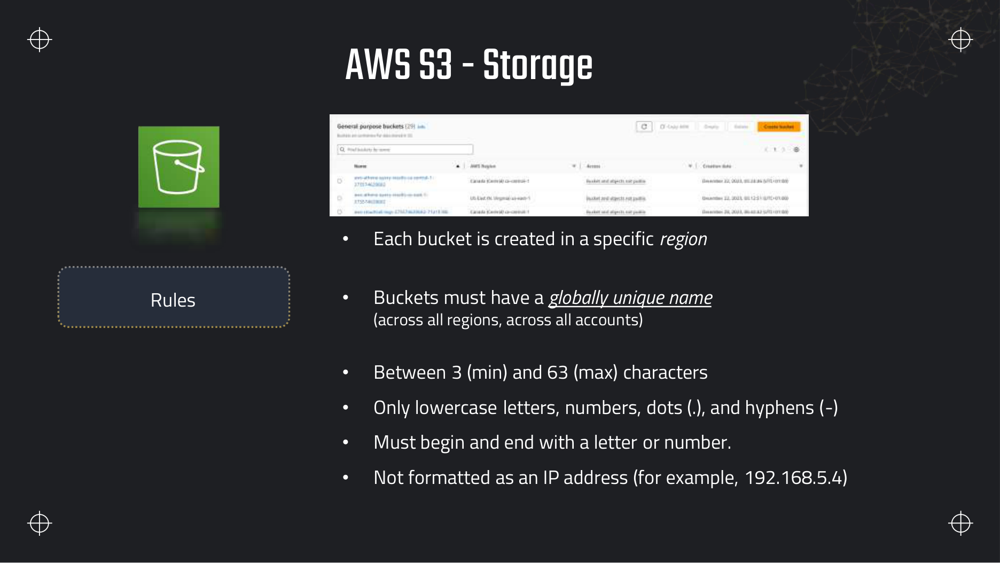
dea-lab-ab-4821 is unlikely to collide with someone else's name.| Rule | Detail |
|---|---|
| Global uniqueness | The name must not exist in any account or Region. DNS-style, so it becomes bucketname.s3.region.amazonaws.com. |
| Length | 3–63 characters. |
| Characters | Lowercase letters, numbers, dots (.), hyphens (-) only. |
| Start and end | Must begin and end with a letter or number. |
| Forbidden | Cannot be formatted as an IP address (e.g. 192.168.5.4). |
| Region | Chosen at creation time and fixed for the life of the bucket. |
Object size limits and upload mechanics
These limits appear in exam questions about large-file uploads and pipeline design:
- Maximum object size: 5 TB per object.
- Single PUT upload limit: 5 GB. Anything larger must use multipart upload — split the file into parts (each 5 MB–5 GB except the last), upload parts in parallel, then complete with an ETag manifest.
- Request rate guidance: S3 scales automatically, but for sustained very high request rates AWS recommends randomising key prefixes so traffic spreads across partitions. The old rule of thumb was ~3,500 PUT/COPY/POST/DELETE and ~5,500 GET/HEAD requests per second per prefix; prefix randomisation (e.g.
raw/year=2026/month=08/uuid/file.parquet) avoids hot prefixes.
Common use cases
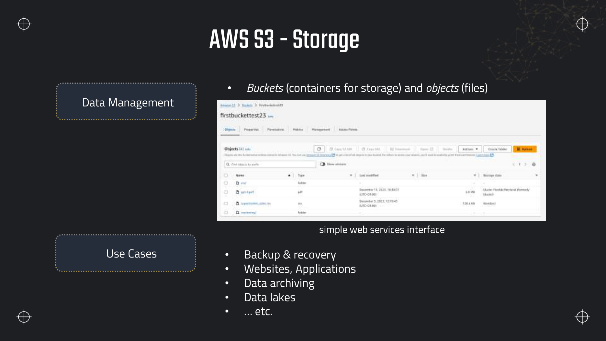
- Backup and recovery — versioning plus cross-Region replication for durability beyond a single Region.
- Static websites and application assets — host HTML, CSS, images; often fronted by CloudFront.
- Data archiving — lifecycle rules move cold data to Glacier classes (see Section 7).
- Data lakes — the canonical store for raw, staging and curated data queried by Athena, Redshift Spectrum, and EMR.
S3 storage classes — overview
Storage class controls cost, availability, and retrieval latency. Every object in a bucket can be in a different class. The full lifecycle, Intelligent-Tiering monitoring fees, and Glacier retrieval tiers are covered in Section 7; here is the map you need before ingestion makes sense.
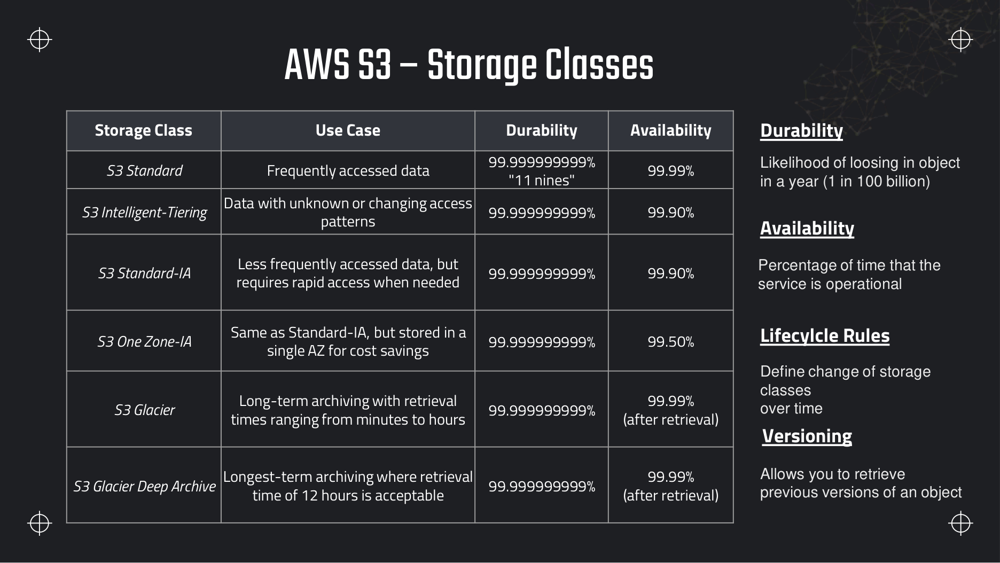
| Storage class | Use case | Durability | Availability |
|---|---|---|---|
| S3 Standard | Frequently accessed data | 99.999999999% | 99.99% |
| S3 Intelligent-Tiering | Unknown or changing access patterns | 99.999999999% | 99.90% |
| S3 Standard-IA | Infrequent access, rapid retrieval when needed | 99.999999999% | 99.90% |
| S3 One Zone-IA | Infrequent access, single-AZ (lower cost, less resilience) | 99.999999999% | 99.50% |
| S3 Glacier Flexible Retrieval | Archive; retrieval minutes to hours | 99.999999999% | 99.99% after retrieval |
| S3 Glacier Deep Archive | Longest-term archive; retrieval ~12 hours | 99.999999999% | 99.99% after retrieval |
Definitions worth memorising
- Durability — likelihood of losing an object in a year (11 nines ≈ 1 in 100 billion). S3 replicates across multiple devices and AZs (except One Zone-IA).
- Availability — percentage of time the service can serve requests. Glacier availability applies after a restore completes.
- Lifecycle rules — automatically transition objects between classes or expire them after N days. The main cost lever for aging log data.
- Versioning — keep previous versions of an object when it is overwritten or deleted. Essential for audit and recovery; pair with lifecycle to expire old versions.
Batch versus streaming ingestion
Ingestion is how data enters the pipeline. The exam splits the world into two patterns — batch (periodic, large volumes) and streaming (continuous, latency-sensitive) — and expects you to pick the AWS service that matches.
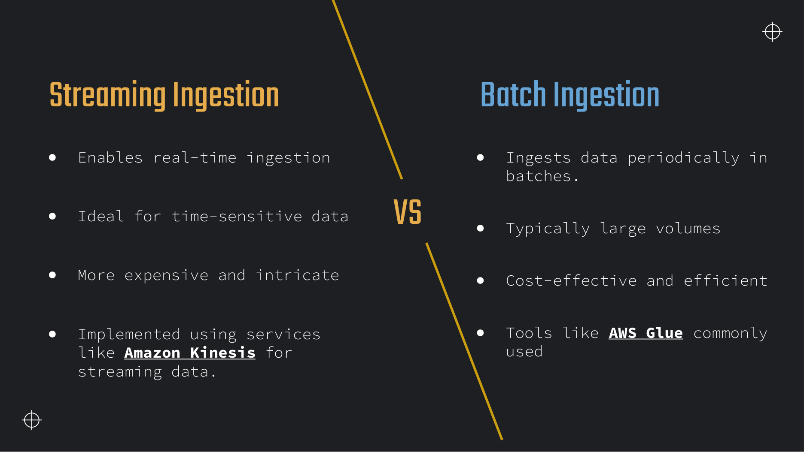
| Dimension | Streaming ingestion | Batch ingestion |
|---|---|---|
| Latency | Sub-second to seconds (real time) | Minutes to hours (scheduled or triggered) |
| Data pattern | Continuous events — clicks, IoT, logs, transactions | Large periodic dumps — nightly DB exports, daily files |
| Cost profile | Higher — always-on shards/brokers, more moving parts | Lower — pay only when the job runs |
| Complexity | Ordering, checkpoints, late data, scaling consumers | Simpler — read file, transform, write file |
| Replay | Kinesis Data Streams, MSK — retain and re-read | Re-run the job from the same S3/RDS source |
| Typical AWS services | Kinesis Data Streams, Managed Flink, MSK, Firehose (near real time) | Glue, EMR, Lambda (scheduled), DMS, DataSync, AppFlow |
| Typical use | Fraud detection, live dashboards, alerting | Data warehouse loads, reporting, lake backfills |
The reference pipeline — where ingestion sits
Stream: Kinesis · Firehose · MSK
Every scenario in this course is a variation of this shape. Ingestion (this section) lands data in S3. The catalog (Glue) makes it discoverable. Transform (Section 4+) cleans and partitions it. Serve (Section 3 onward) queries and visualises it. Kinesis streaming is covered in Section 6; batch orchestration in Section 4.
AWS Glue — managed ETL
AWS Glue is the default batch transform service on the exam. It is fully managed, serverless, Spark-backed, and integrates with S3, the Data Catalog, Redshift, RDS, and streaming sources — without you provisioning a cluster.
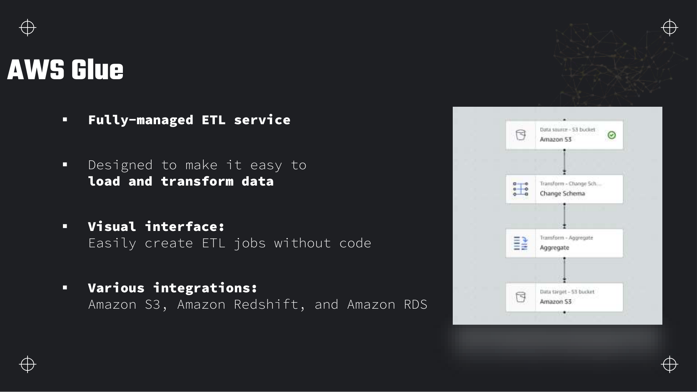
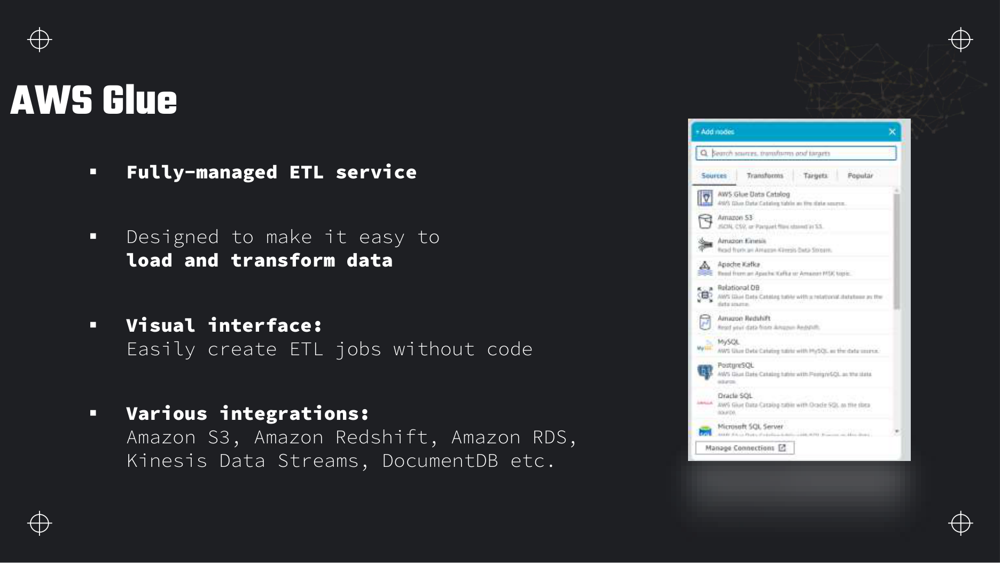
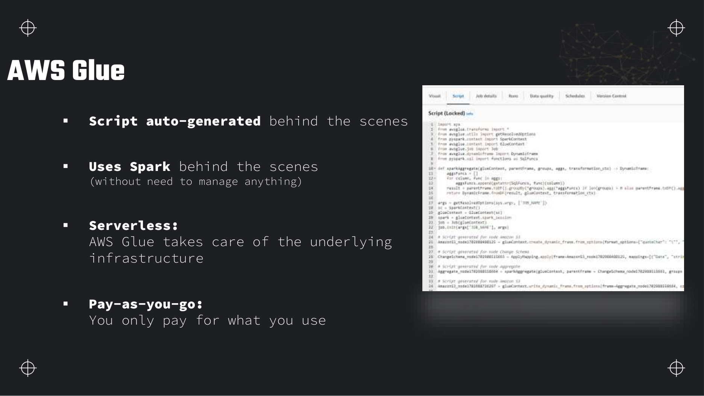
DynamicFrame code you can unlock and edit. You pay per DPU-hour (Data Processing Unit) while the job runs — no idle cluster cost.What Glue provides at a high level
| Component | Role |
|---|---|
| Crawler | Scans a data source, infers schema, detects partitions, writes table metadata to the Data Catalog. |
| Data Catalog | Hive-compatible metastore of databases, tables, partitions — shared by Athena, Redshift Spectrum, EMR. |
| ETL jobs | Spark (PySpark/Scala) or Python shell jobs that transform and load data. |
| Triggers | Schedule jobs or fire them when another job completes (on-demand, scheduled, conditional). |
| Workflows | Orchestrate crawlers, jobs, and triggers as a directed acyclic graph with run history. |
| Classifiers | Custom or built-in rules that tell a crawler how to interpret a file format (CSV, JSON, Parquet, Avro, etc.). |
Section 4 is the deep dive: job bookmarks, worker types, connections, Data Quality, and cost optimisation. For now, remember the exam's shorthand — "easiest way to ETL from S3 to Redshift" is almost always Glue.
The Glue Data Catalog
Raw files in S3 are not queryable until something registers their schema. The Glue Data Catalog is that registry — a central Hive metastore replacement that Athena, Amazon Redshift Spectrum, Amazon EMR, and QuickSight all read.
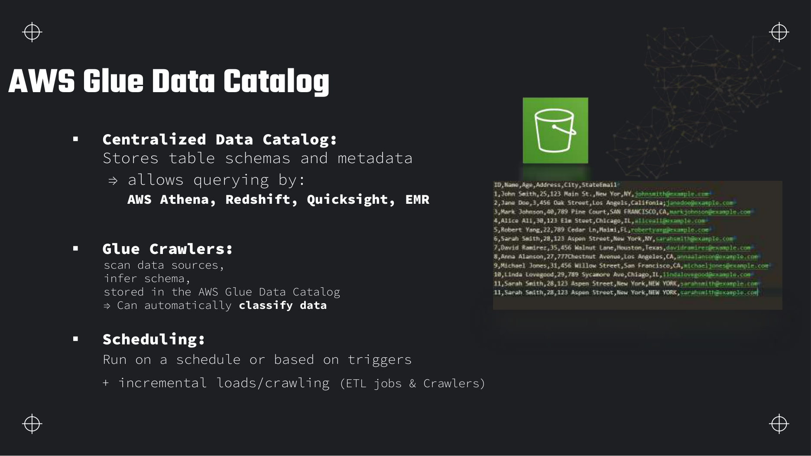
customers.csv with columns ID, Name, Age…), infers types, writes a table definition, and downstream engines use that metadata to plan queries without moving the data.How a crawler works
- Point at a data source — typically an S3 path such as
s3://bucket/raw/customers/, or a JDBC connection to RDS. - Classify — built-in or custom classifiers identify the format (CSV header row, JSON structure, Parquet footer).
- Infer schema — sample files to derive column names and types. You can override types in the console or with a Glue job.
- Detect partitions — if keys look like
year=2026/month=08/, the crawler creates partition entries so Athena can prune. - Write to the catalog — one table (or more) under a database, visible immediately to Athena and Spectrum.
Crawlers run on a schedule or on demand, support incremental crawling (only new folders/files), and can be chained in workflows with ETL jobs. After the initial crawl, many teams switch to partition projection or ALTER TABLE ADD PARTITION for new dates instead of re-crawling the entire bucket — see Section 3.
From S3 files to a queryable table
Deeper detail and exam edge cases
Operational limits on S3 ingestion, storage-class economics, and catalog costs — the numbers behind landing-zone design that the overview slides mention but do not quantify.
Limits and quotas that decide answers
| Limit | Value | Adjustable? | Why it matters |
|---|---|---|---|
| S3 request rate per prefix | ~3,500 PUT/COPY/POST/DELETE and ~5,500 GET/HEAD per second per prefix (hard at extreme sustained load) | Yes — randomise key prefixes (hash or date shards) to spread load | Hot prefix = throttling on high-frequency small writes; exam "millions of PUTs/sec to one path" → redesign keys or use Kinesis/DynamoDB. |
| Maximum object size | 5 TB | No (hard) | Archive and media pipelines; multipart required well before this ceiling. |
| Single PUT upload maximum | 5 GB | No (hard) | Anything larger must use multipart upload — common exam distractor. |
| Multipart part size range | 5 MB–5 GB per part (last part can be smaller) | No (hard) | Tune part size for parallel upload bandwidth on large files. |
| Buckets per account (default) | 100 soft quota per Region | Yes — Service Quotas increase request | Multi-tenant lakes rarely hit this; account design matters for isolation. |
| Data Catalog objects free tier | First 1 million tables/partitions/schemas per month | N/A — billing tier above threshold | Millions of daily partitions without projection can push catalog storage over free tier. |
| Data Catalog above free tier | ~1 USD per 100,000 objects/month (us-east-1) | Yes — reduce partition count, use partition projection | Cost appears on high-cardinality partition strategies, not on small lab crawlers. |
| Crawler minimum bill | 10 minutes per crawl run | No (hard) | Hourly crawls on tiny prefixes waste money — prefer event-driven partition registration. |
| Standard-IA / One Zone-IA minimum storage duration | 30 days | No (hard) | Deleting or transitioning early still bills the remainder of 30 days. |
| Glacier Flexible Retrieval minimum storage duration | 90 days | No (hard) | Lifecycle to Glacier on data you might delete within three months is expensive. |
| Glacier Deep Archive minimum storage duration | 180 days | No (hard) | Compliance archives only — wrong class for staging data read during ETL. |
| IA / Glacier minimum billable object size | 128 KB for Standard-IA, One Zone-IA, Glacier Instant Retrieval | No (hard) | Millions of tiny objects in IA classes pay as if each were 128 KB — small-file problem hits billing too. |
| Standard-IA retrieval charge | Per GB retrieved plus per-request fee | No — design access pattern instead | Frequent reads on IA objects cost more than Standard — exam "monthly report" vs "daily dashboard" split. |
| Free tier S3 Standard storage (new accounts) | 5 GB for 12 months | N/A | Course labs fit easily; cost comes from other services, not raw storage. |
What you actually pay for
| Billed dimension | Unit | How to spend less |
|---|---|---|
| S3 Standard storage | GB-month | Lifecycle to IA/Glacier for cold prefixes; Intelligent-Tiering when access pattern is unknown. |
| S3 requests | Per 1,000 PUT/GET/LIST | Batch small files into Parquet; reduce LIST-heavy crawlers; use S3 Inventory instead of daily full crawls. |
| Early delete / transition (IA, Glacier) | Remaining minimum duration | Do not lifecycle raw landing data to Glacier until retention policy is stable. |
| Glacier retrieval | Per GB + tier (expedited/standard/bulk) | Keep queryable layers in Standard or Intelligent-Tiering; Glacier for true archive. |
| Glue crawler | DPU-hour (~0.44 USD/DPU-hr us-east-1) with 10-min minimum | Crawl once, then ADD PARTITION or partition projection; incremental crawl only new folders. |
| Data Catalog storage | Per 100K objects/month above 1M free | Partition projection for date keys; avoid MSCK on millions of paths. |
| Cross-AZ / cross-Region replication | Per GB transferred + storage duplicate | Single-Region lake for analytics; replicate only when DR/compliance requires it. |
| KMS SSE-KMS requests | Per API call on encrypted objects | SSE-S3 for internal lake tiers; SSE-KMS when audit trail per key use is required. |
Traps that catch people
- Single PUT for a 50 GB file — Upload fails or times out because the 5 GB single-PUT limit applies. Multipart upload is mandatory above 5 GB and recommended for large files on unreliable networks.
- Hot prefix on high write rate — All producers write to
logs/current/without sharding. S3 scales, but sustained per-prefix limits cause throttling. Randomise or date-shard prefixes instead. - Small-file problem — Kinesis Firehose or streaming writers emit one S3 object per minute. Athena and Spark spend more time listing and opening files than reading data. Compact with scheduled Glue jobs.
- Assuming crawlers are free — Catalog storage is cheap at lab scale, but crawlers bill DPU-hours with a 10-minute floor every run. Re-crawling the whole bucket daily on production data adds up.
- IA class for daily ETL reads — Standard-IA charges per GB retrieved. Raw data read every night by Glue belongs in Standard or Intelligent-Tiering, not IA.
- Ignoring minimum storage duration — Lifecycle moves data to Glacier then a retention policy deletes it after 30 days. You still pay for 90 or 180 days minimum depending on class.
- Non-idempotent append paths — Retried batch jobs write
output/run_timestamp/duplicates. Deterministic partition paths (date=2026-08-03/) with overwrite semantics keep replays safe. - Region mismatch — Bucket in
us-west-2, crawler and Athena inus-east-1. Metadata points at wrong Region or empty listings. Pick one Region and tag resources. - Treating prefix as a folder — Copying "the folder" does not move objects without listing every key. Pipeline code must handle keys explicitly — no atomic directory rename.
Troubleshooting playbook
| Symptom | Most likely cause | What to check / fix |
|---|---|---|
| Athena returns zero rows but S3 has files | Table LOCATION or Region wrong; or no partition registered | Compare SHOW CREATE TABLE LOCATION to actual keys; run crawler or ALTER TABLE ADD PARTITION; confirm same Region. |
503 SlowDown on heavy PUT rate | Hot prefix throttling | CloudWatch S3 4xxErrors; spread writes across randomized sub-prefixes; review request rate per prefix guidance. |
| Multipart upload orphaned parts | Failed complete-multipart; no lifecycle abort rule | S3 → Metrics → Incomplete multipart uploads; add lifecycle rule to abort incomplete uploads after 7 days. |
| Crawler finishes fast but schema wrong | Classifier sampled wrong files or mixed formats in one path | Separate formats by prefix; add custom classifier; override column types in catalog. |
| Glue job succeeds but duplicate rows after retry | Non-idempotent write — append without bookmark or merge | Enable job bookmarks; write to deterministic partition; use overwrite mode for Parquet partition. |
| Storage bill spike after lifecycle change | Early delete fees on IA/Glacier transitions | Cost Explorer by storage class; review transition age rules vs actual retention. |
| Queries slow on new partition layout | Small files — thousands of objects under one partition | S3 Inventory or aws s3 ls --summarize object counts; compact to 128 MB–1 GB files with Glue. |
| Upload works but downstream cannot read | Encryption — SSE-KMS key policy blocks Glue/Athena role | Verify KMS key policy grants decrypt to crawler and job IAM roles; or use SSE-S3 for shared lake. |
Production patterns
Production landing zones use a medallion layout: raw/ (immutable source), staging/ (typed, lightly cleaned), curated/ (modelled, partitioned Parquet). Ingestion is either batch (DMS, DataSync, scheduled files) or streaming (Firehose → S3 with date prefixes). The catalog is populated once per source, then partitions are registered by the ETL job that writes them — not by an hourly full-bucket crawler.
Idempotent batch landing with deterministic keys
Anti-pattern: one bucket prefix per tenant with no date partitioning and a nightly crawler over the entire bucket. At scale, LIST operations, catalog object count, and crawler runtime grow linearly with history. Replace with partition projection or explicit daily partitions written by the ingest job.
aws s3 cp large_export.parquet s3://dea-lab-ab-4821/raw/exports/ \
--storage-class STANDARD \
--expected-size 85899345920
aws s3api list-multipart-uploads --bucket dea-lab-ab-4821Where this fits with the rest of the exam
This section defines the lake foundation every downstream service assumes. Without S3 vocabulary and catalog registration, Athena, Glue jobs, Redshift COPY, and Spectrum have nothing to target.
- Section 3 (Athena) — queries the tables crawlers register here; partition layout directly drives scan cost.
- Section 4 (Glue deep dive) — job bookmarks, worker sizing, and DataBrew build on the ingestion patterns introduced above.
- Section 6 (Streaming) — when batch landing is too slow; Firehose and Kinesis write the same S3 prefixes with different latency guarantees.
- Section 7 (S3 depth) — lifecycle rules, replication, and access points extend storage-class choices sketched here.
- Section 10 (Redshift) — COPY from S3 and Spectrum both expect hive-partitioned curated data.
- Section 18 (Migration) — DMS and DataSync as alternate batch ingest paths into the same raw layer.
Interview questions
Answer each one out loud before opening it.
Explain the difference between an S3 bucket, object, key and prefix.Fundamentals
A bucket is a globally unique container in one AWS Region. An object is the stored data plus metadata. The key is the object's full name within the bucket — e.g. raw/customers/file.parquet — including any slash-separated segments. A prefix is the leading portion of keys used for listing and partitioning, such as raw/customers/; S3 has no real directories, only key strings that share a prefix.
Why is S3 described as object storage rather than a file system, and what does that mean for pipeline design?Architecture
Object storage treats each file as an independent blob addressed by key. There is no in-place append, rename is a copy-plus-delete, and listing is by prefix not by inode. Pipelines must write immutable files (often partitioned by date), use overwrite-by-path for idempotency, and avoid patterns that need random small writes to one key. That is why analytics workloads convert to columnar Parquet in partition folders rather than updating individual rows in a CSV.
What is S3's consistency model today, and why might older study material be wrong?Gotcha
Since December 2020, Amazon S3 provides strong read-after-write consistency for PUT, DELETE, LIST, and GET. A successful write is immediately visible to all readers. Before 2020, new objects were eventually consistent for LIST/GET (updates and deletes were already strongly consistent). Exam answers should reflect the current model unless the question explicitly references legacy behaviour.
You need to upload an 80 GB file to S3. What approach do you use and why?Design
Use multipart upload. A single PUT is limited to 5 GB; the maximum object size is 5 TB. Multipart splits the file into parts (5 MB–5 GB each), uploads them in parallel, and completes with an aggregate ETag. It is faster, resumable on failure, and required above 5 GB. The AWS CLI and SDKs do this automatically for large files.
When would you choose streaming ingestion over batch, and which AWS services fit each?Comparison
Choose streaming when decisions must happen in seconds — fraud, live metrics, operational alerting — using Kinesis Data Streams, MSK, or Managed Flink. Choose batch when latency of minutes or hours is fine and volumes are large — nightly warehouse loads, lake backfills — using Glue, EMR, DMS, or scheduled Lambda. Near real time (Firehose, minute-level latency) sits between the two at lower cost than true streaming.
What does a Glue crawler do, step by step?Fundamentals
A crawler connects to a data store (usually S3), uses classifiers to recognise file formats, samples files to infer column names and types, detects partition keys from path patterns like year=2026/, and writes table and partition metadata to the Glue Data Catalog. Scheduled or on-demand runs can incrementally pick up new folders. The data itself never moves — only metadata is updated.
Why is the Glue Data Catalog described as a Hive metastore replacement?Architecture
Apache Hive (and Presto/Trino, Spark SQL) expect a metastore — a database of table locations, column schemas, and partition lists. The Glue Data Catalog implements that interface so Athena, EMR, and Redshift Spectrum can all query the same S3 datasets using one set of table definitions. Without it, each engine would need its own schema copy.
Compare S3 Standard and S3 Glacier Deep Archive for a ten-year compliance archive.Cost
Standard gives instant access at the highest storage cost — wrong for rarely touched compliance data. Glacier Deep Archive is the cheapest storage class with retrieval in roughly 12 hours, suitable when reads are almost never needed. Use lifecycle rules to transition objects automatically after N days. Remember minimum storage duration charges and retrieval fees on Glacier classes.
Hands-on practice
Free tier where possible. Delete everything at the end of each task unless noted.
-
Explore your lab bucket: list objects under
S3 → Buckets → your bucket → Objectsraw/customers/, note the key versus prefix, and upload the same file under a second keystaging/customers/customers.csvto see two independent objects.The console shows two objects with different keys;
aws s3 ls s3://$BUCKET/ --recursivelists both.Show stepsCLI
BUCKET=dea-lab-ab-4821 # your bucket from Section 1 aws s3 ls s3://$BUCKET/raw/customers/ aws s3 cp data/customers.csv s3://$BUCKET/staging/customers/customers.csv aws s3 ls s3://$BUCKET/ --recursive --human-readableNo cleanup — these files are reused in Sections 3 and 4.
-
Run a Glue crawler against
Glue → Crawlers → Create crawlers3://$BUCKET/raw/customers/, create a databasedea_lab, and confirm the table appears in the Athena data source dropdown.Athena shows database
dea_labwith a table whose columns matchcustomers.csv(ID, Name, Age, Address, City, State, Email).Show stepsConsole
- Glue → Databases → Add database → name
dea_lab. - Glue → Crawlers → Create crawler → name
customers-raw. - Data source → S3 path
s3://$BUCKET/raw/customers/. - IAM role: create
AWSGlueServiceRole-dea-labwith the AWS managed Glue service policy. - Output → target database
dea_lab. Run the crawler. - Open Athena → Data source
AwsDataCatalog→ databasedea_lab.
Leave the crawler and table for Section 3. Delete the crawler later if you recreate it in Section 4.
- Glue → Databases → Add database → name
-
Enable versioning on your lab bucket, overwrite
S3 → Bucket → Properties → Bucket Versioning → Enablecustomers.csvwith a modified copy (change one name), then restore the previous version from the console.Two versions of the object exist; you can download the older version and see the original name.
Show stepsConsole + CLI
- Properties → Bucket Versioning → Enable.
- Edit
data/customers.csvlocally (change row 1's name), re-upload to the same key. - In the object detail view, open Versions and download the prior version.
aws s3api list-object-versions --bucket $BUCKET --prefix raw/customers/customers.csvOptional cleanup: suspend versioning and delete markers if you want a single version again. Versioning itself has no extra charge beyond stored bytes.
Recap
- S3: buckets (regional, globally unique names) hold objects addressed by keys; prefixes organise listing, not real folders.
- S3 is object storage — immutable files, not a POSIX file system. Strong read-after-write consistency since Dec 2020.
- Limits: 5 TB max object, 5 GB single PUT → use multipart upload above 5 GB; spread hot prefixes for high request rates.
- Storage classes trade cost for access speed; all share 11 nines durability. Details in Section 7.
- Batch ingestion: periodic, cheap, Glue/EMR/DMS. Streaming: real-time, Kinesis/MSK/Flink. Firehose = near real time.
- Glue: serverless Spark ETL — crawlers, jobs, triggers, workflows, classifiers, pay per DPU-hour.
- Glue Data Catalog = Hive metastore shared by Athena, Redshift Spectrum, EMR. Crawlers infer schema and partitions from S3.
- Pipeline shape: ingest → S3 → catalog → transform → query/serve.